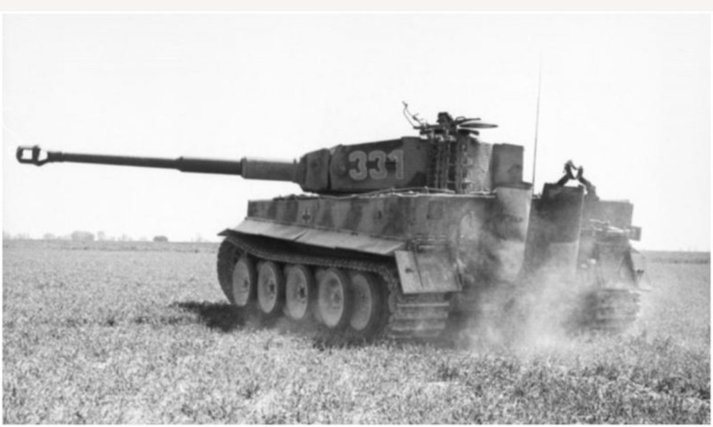
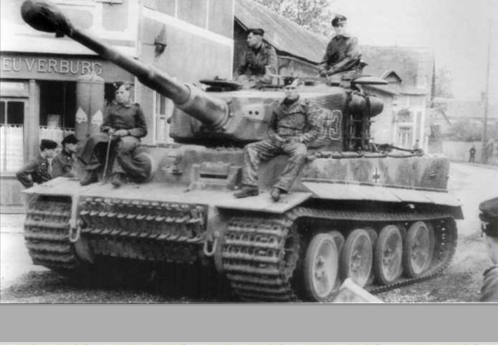
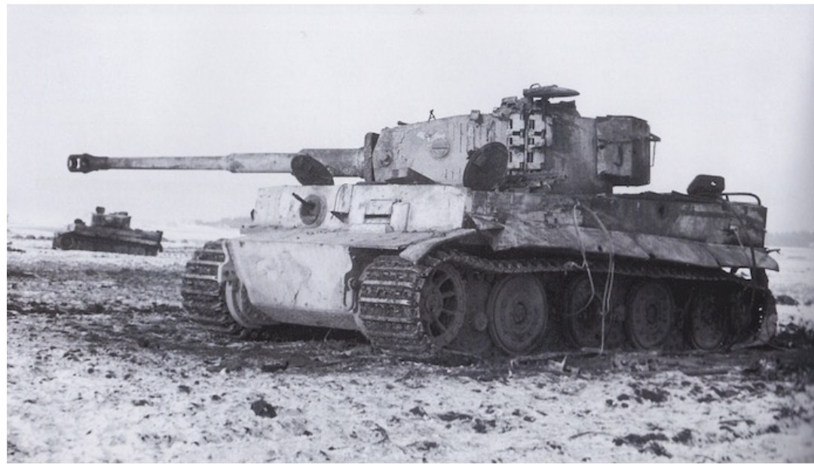
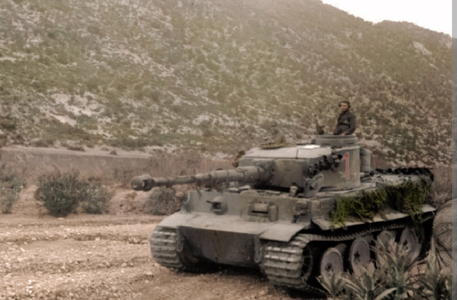
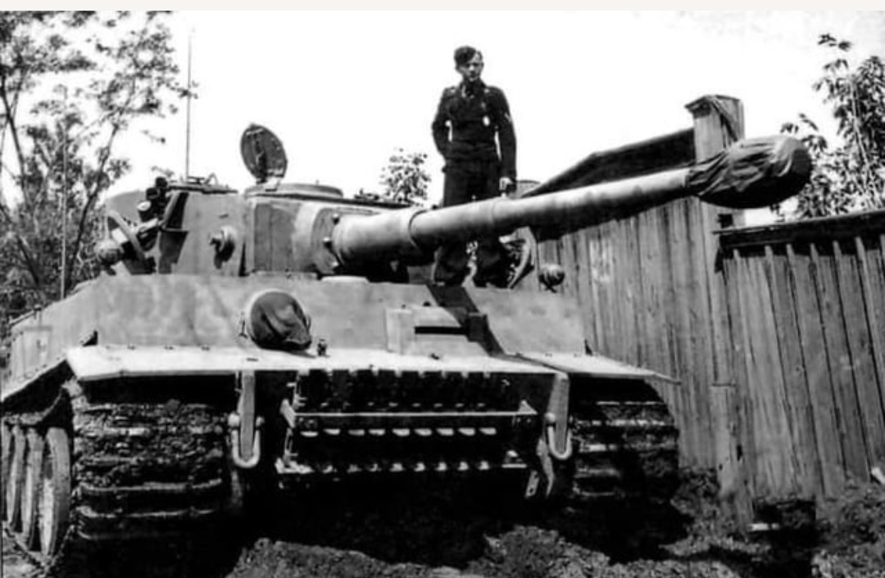

Le Tiger I est l’un des chars les plus célèbres de la Seconde Guerre mondiale. Conçu pour dominer les champs de bataille, il combine un blindage massif et un canon de 88 mm capable de détruire n’importe quel char allié à longue distance.
Produit entre 1942 et 1944, il existe en trois versions principales : Early, Mid et Late. Voici la fiche complète du Tiger I dans la collection du Musée HOP WW2.

Première version du Tiger I, reconnaissable à ses filtres Feifel, ses roues pleines et ses détails de caisse spécifiques. Engagé en Tunisie et sur le Front Est, il impressionne par sa puissance de feu et sa résistance.

Version améliorée, avec suppression des filtres Feifel, modifications de la tourelle, et fiabilité accrue. Très présent à Koursk et dans les grandes batailles du Front Est.

Version tardive, dotée de roues simplifiées, d’un blindage optimisé et de nombreuses corrections mécaniques. Utilisé jusqu’à la fin de la guerre, notamment en Normandie et dans les Ardennes.

Version déployée en Afrique du Nord. Peinture sable, filtres Feifel renforcés, et adaptations pour les conditions désertiques. Redouté par les forces alliées.

Version équipée de radios supplémentaires, antennes spécifiques et matériel de coordination. Utilisée par les commandants de bataillon pour diriger les unités blindées.